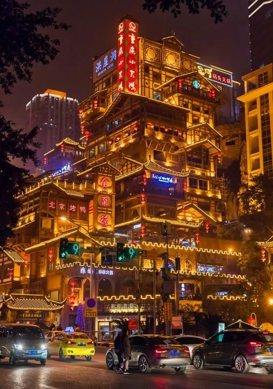

Dzielnica Akademii stanowi balans między dzilnicą Korporacji, a dzielnicą Ogrodu przynajmniej jeśli chodzi o architekture. Jednak techonologicznie jest dużo bliżej nowoczesnej Korporacji, niż Ogrodowi. To tutaj możesz spełnić marzenie o studiowaniu wśród najlepszych na świecie na Akademii Theros. Znajdują się na niej takie wydziały jak prawo. medycyna, ekonomia, ale takrze wiele kierunków pięknych takich jak malarstwo, czy sztuka aktorska. Innym z skarbów tej dzielnicy jest kasyno, które znajduje się w centrum części dzielnicy, To tam możesz zagrać o najwyższą stawkę.

Cała dzielnica jest mocno nastawiona na rozrywkę i na każdym kroku można znaleźć jakiś automat lub inną formę rozrywki. Jedynum wyjątkiem od rozrywki jest gotycki kościół wybudowany na skraju całego miasta.